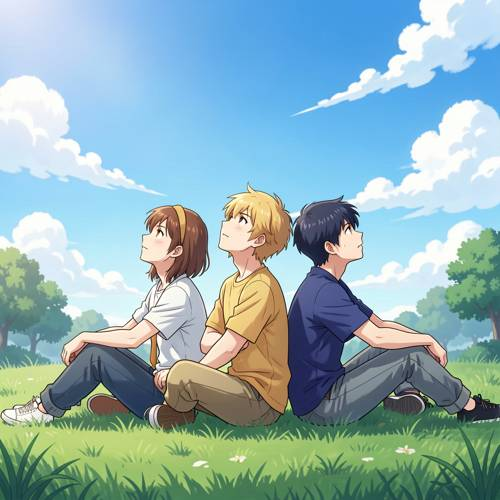
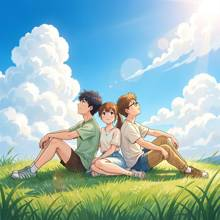
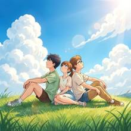

Relationship — In the Japanese animation style, three teenagers sat back to back on a
In the Japanese animation style, three teenagers sat back to back on a green grass, looking up at the summer sky.

Direct — one call, no iterationContinuum — Kimi K3 + FLUX.2-klein-9B
Judge — Direct
FAILRelationship - Composition — In the image, three teenagers are sitting on the grass. The one in the middle and the one on the right are sitting back-to-back. The teenager on the left is sitting next to the one in the middle, facing the same direction, not in a back-to-back position with the others. Therefore, not all three teenagers are sitting back to back.
PASSStyle — The image is rendered in a style characteristic of Japanese animation, featuring characters with large, expressive eyes, stylized hair, and clean outlines. The coloring uses cel-shading with soft gradients, which is a common technique in modern anime.
PASSAttribute - Quantity — The image depicts exactly three individuals who appear to be teenagers, sitting on a grassy field.
Judge — Continuum
PASSRelationship - Composition — The image depicts three people sitting on the grass. The person on the far left, a boy, has his back against the middle person, a girl. The person on the far right, another boy, has his back against the girl in the middle as well. They are arranged in a line, leaning back against one another.
PASSStyle — The image is created in a style consistent with Japanese animation (anime). This is visible in the character designs with large, expressive eyes and stylized hair, the clean linework, the vibrant color palette, and the detailed, scenic background featuring a bright blue sky and fluffy white clouds.
PASSAttribute - Quantity — The image clearly shows three human figures. Their physical features and casual clothing are consistent with the appearance of teenagers.
What the agent did
Thinking
Generate an anime-style image: three teenagers sitting back to back on green grass, looking up at summer sky. Use flux2-klein.
Step 1 — `generate_image`
{
"prompt": "Japanese anime style illustration, three teenagers sitting back to back to back on a lush green grassy hill, leaning against each other, all looking up at a bright summer sky. Vivid blue sky with large fluffy white cumulus clouds, warm summer sunlight, gentle breeze, soft lens flare. One boy with short dark hair, one girl with a ponytail, one boy with glasses, casual summer clothes. Ghibli-inspired pastoral atmosphere, vibrant saturated colors, painterly clouds, grass swaying, high quality anime key visual, wide shot from a slightly low angle showing the vast sky above them.",
"model": "flux2-klein"
}
Result img_0

Thinking
The image looks good: anime style, three teenagers sitting back to back on green grass, summer sky with cumulus clouds, lens flare. One issue: the girl in the middle is looking at the viewer rather than up at the sky. The two boys look up. Minor. Could edit so the girl also looks up at the sky. Let me try one edit.
Model
The result looks good overall: anime style, three teens back-to-back on green grass under a summer sky. One small issue — the middle girl looks at the viewer instead of up at the sky. Let me fix that.
Step 2 — `edit_image`
{
"image": "img_0",
"model": "flux2-klein",
"prompt": "Change the middle girl's gaze so she is looking up at the sky like the two boys beside her; keep her face, hairstyle, and everything else unchanged."
}
Result img_1

Thinking
Now all three are looking up at the sky. Everything else preserved. This matches the prompt. Mark best and stop.
Step 3 — `mark_best`
{
"image": "img_1",
"reason": "All three teenagers now gaze up at the summer sky while sitting back to back on green grass; anime style, vibrant summer clouds, everything from the prompt is present and correct."
}
Model
Done! The final image (img_1) matches your description: - **Japanese anime style** — clean line art, vibrant saturated colors, Ghibli-like pastoral feel - **Three teenagers back to back** — a dark-haired boy, a ponytailed girl, and a boy with glasses leaning against each other - **Green grass** — lush sunlit grassy hill in the foreground - **Looking up at the summer sky** — all three gazes directed upward at a vivid blue sky with big fluffy cumulus clouds, sun flare in the corner The initial version had the middle girl looking toward the viewer, so I edited her gaze to match the boys looking skyward. The image is marked as the best result.